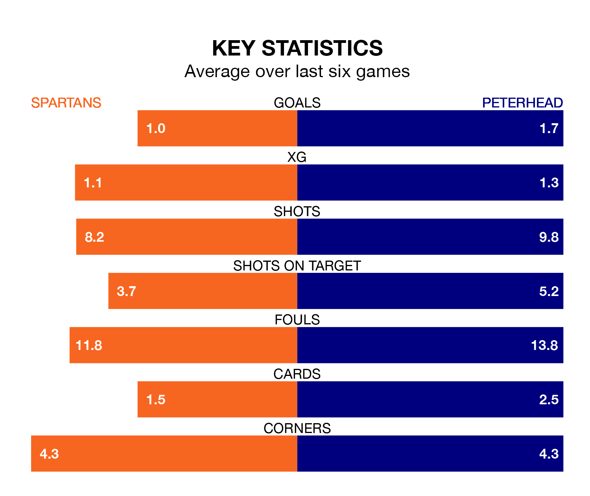

Two of League Two's top sides face each other at the Ainslie Park Stadium in Saturday's kick-off, when fourth-placed Spartans host second-placed Peterhead.
Spartans have picked up 14 wins and 12 draws from 34 games so far this season, and sit two points below the visitors going into the 3pm match.
The Blue Toon, meanwhile, have won 15 and drawn 11, picking up 56 points.
With 54 goals in 34 games so far this season, Peterhead are the league's highest scorers with 1.6 goals per game. And they are conceding fewer than average, letting in 36 goals at a rate of 1.1 per game.
Spartans are also above average scorers, with 1.4 goals per game, compared to a league average of 1.3. They have conceded 1.2 goals per game.
In Blair Henderson, the Spartans have the league's most on-form striker so far this season. He has notched 18 goals in 33 appearances.
The Blue Toon's top scorers, with eight goals each, are Rory McAllister, Hamish Ritchie and Kieran Shanks.
In the last five years, Spartans and Peterhead have played each other on four occasions. Spartans won three of them and Peterhead one.
On average, the Spartans scored 1.2 goals and the Blue Toon 0.8 in those matches.
Their last meeting was on January 6, when Spartans won 1-0 away.
The home side are in mixed form in League Two, with two wins and three draws from their last six games.
With two wins and four draws over that period, the visitors' form is slightly better – they have taken 10 points from 18, compared to Spartans's nine.
Spartans's last match was on April 20, a 1-0 win against Bonnyrigg Rose Athletic, with Henderson getting the goal for the Spartans.
Peterhead drew 1-1 with Elgin City last time out, also on April 20, with Peter Pawlett on the scoresheet.
Updated: 07:59 (UTC), 26/04/24